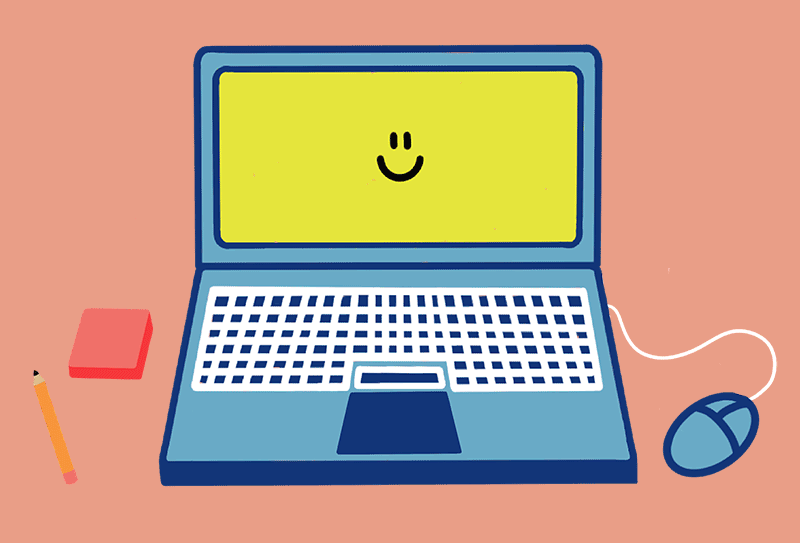

Zdrowy balans
W dzisiejszym dynamicznym świecie wiele z nas spędza znaczną część dnia przed ekranem komputera. Choć technologia przynosi liczne korzyści, nadmierna aktywność przed monitorem może prowadzić do szeregów wyzwań zdrowotnych. Zadbanie o równowagę pomiędzy korzystaniem z komputera a zdrowym stylem życia staje się coraz bardziej istotne.Dlatego jeśli czujesz, że jkest ci to potrzebne, zrób sobie przerwę od komputera.
